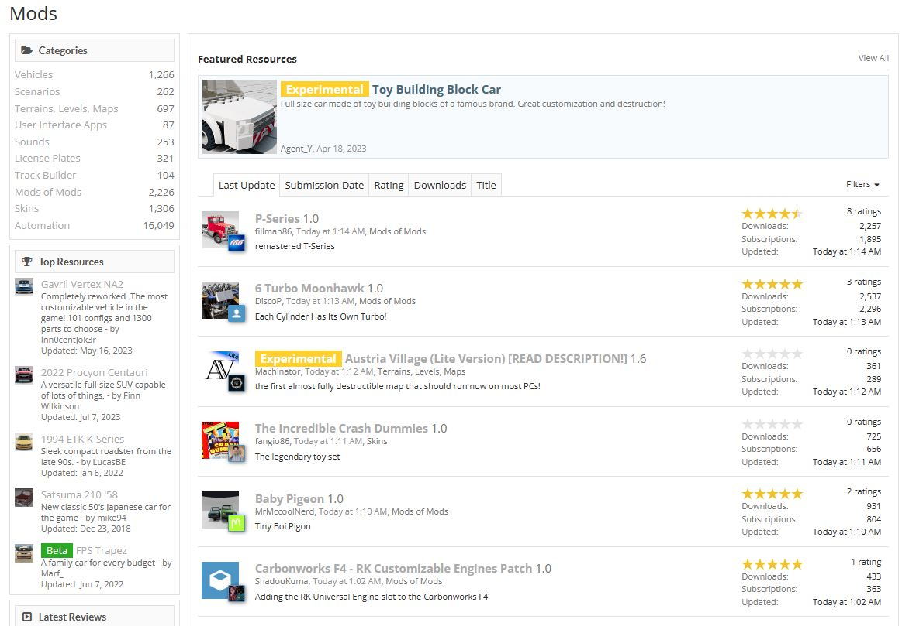

BeamNG specializes in the development of physics simulation based software, best known for its vehicle game BeamNG.drive, which is now available on Steam. The development team is currently focused on creating a state-of-the-art real-time soft-body physics engine and making it widely available for entertainment and simulation purposes.
You can read more about it at www.beamng.com
Beamng has developed a realistic and accurate simulation of a range of sensors that are found on many modern day vehicles. The simulation of sensors helps research and developers to test and improve their sensor technologies in a safe and cost-effective way.
These sensors include:
The devs at BeamNG are working hard to improve existing features and technologies as well as adding new ones beamng.tech
BeamNG.Drive's modding support is based on the Torque 3D engine, which provides a powerful and flexible framework for mod development. The game also features a built-in editor that enables players to create and edit content within the game itself. This is one of the main attractions of the game
Mods can be downloaded either directly in-game, or through the official mod repository at beamng.com/resources
The always-active BeamNG community is a welcoming bunch that's always supporting one another. They spend time discussing the ever growing mod catalog, providing support when someone runs into problems, and creating suggestions for future update features and content.